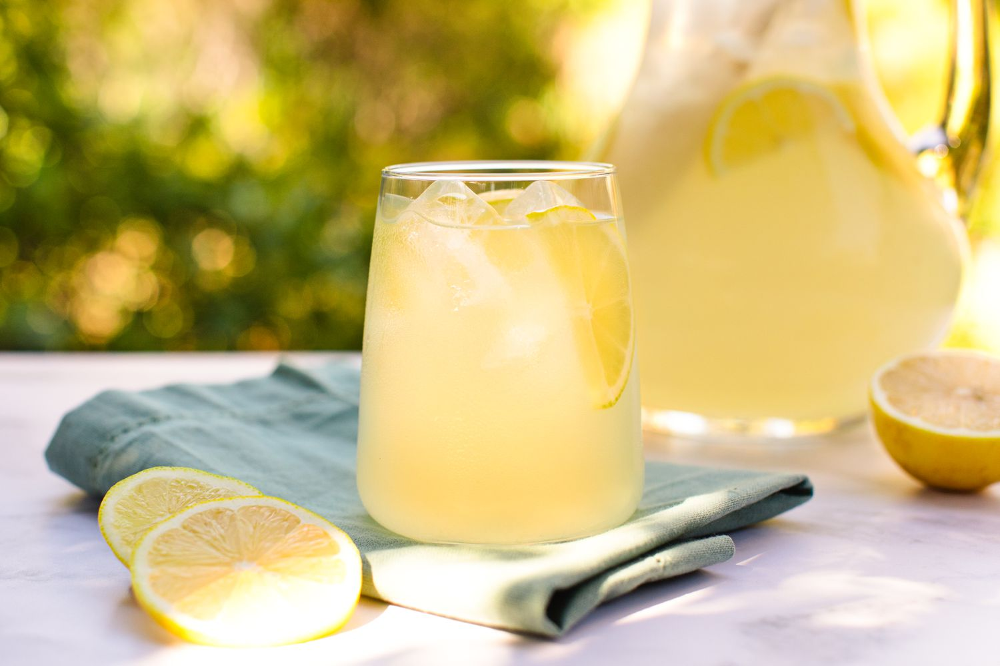

Lemonade

Description
Lemonade is a colourless sweet fizzy drink. A drink that is made from lemons, sugar,
and water and is not fizzy can also be referred to as lemonade
Ingredients
- 1 cup sugar (can reduce to 3/4 cup)
- 1 cup water (for the simple syrup)
- 1 cup freshly squeezed lemon juice
- 2 to 3 cups cold water, to dilute
Steps
- Place the sugar and water in a small saucepan and bring to a simmer. Stir so that the sugar dissolves completely and remove from heat.
- While the water is heating for the simple syrup, juice your lemons. Depending on the size of the lemons, 4 to 6 of them should be enough for 1 cup of juice.
- Pour the juice and the simple syrup sugar water into a serving pitcher. Add 2 to 3 cups of cold water and taste.
- Refrigerate 30 to 40 minutes.Serve with ice and sliced lemons.